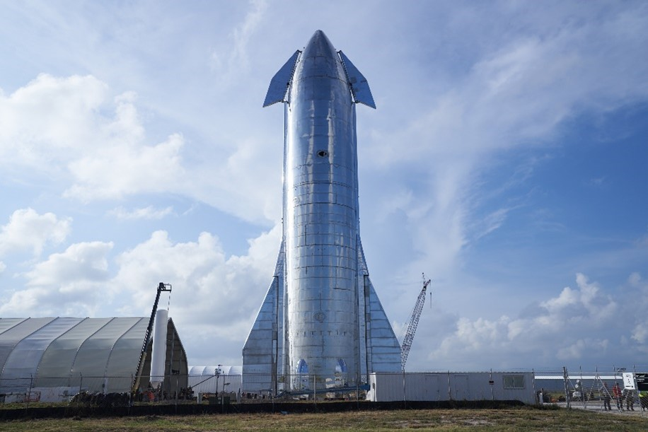

SpaceX's Starship is a fully reusable super-heavy launch system designed for a wide range of missions and applications, with the goal of revolutionizing space travel and exploration. Here are some of the intended uses and applications of SpaceX's Starship: 1. Crewed Space Exploration: Starship is envisioned as a spacecraft capable of carrying humans on missions beyond Earth. It is intended to play a pivotal role in SpaceX's plans for crewed missions to the Moon, Mars, and potentially other destinations in the solar system. 2. Lunar Missions: SpaceX has been awarded a contract by NASA to use Starship for the Artemis program, which aims to return humans to the Moon. Starship is expected to transport astronauts to lunar orbit and the lunar surface. 3. Mars Colonization: Elon Musk's long-term vision for Starship is to enable the colonization of Mars. The spacecraft's large payload capacity and fully reusable design are critical to this ambitious goal. 4. Satellite Deployment: Starship's ability to carry a significant payload capacity makes it suitable for launching large constellations of satellites, including SpaceX's own Starlink broadband internet satellites and other commercial satellite missions. 5. Deep Space Exploration: Starship's versatility and adaptability make it a potential choice for missions to explore asteroids, the outer planets, and even interstellar travel. 6. Space Tourism: Starship could facilitate space tourism by providing commercial trips to space for private individuals and paying customers, allowing civilians to experience space travel. 7. International Space Station (ISS) Resupply: Starship may be used for cargo resupply missions to the ISS or other future space stations, supporting scientific research and international cooperation in space. 8. Space-Based Research: Starship's ability to carry large payloads to various orbits can support scientific research missions, including space telescopes, observatories, and experiments. 9. Point-to-Point Earth Travel: SpaceX has discussed the potential use of Starship for extremely fast point-to-point Earth travel, enabling rapid intercontinental travel with suborbital hops. 10. National Security and Defense: Starship may have applications in national security, defense, and space-related missions, including the deployment of classified payloads. 11. Planetary Defense: Starship's size and capabilities could be leveraged for planetary defense missions, such as deflecting asteroids on a collision course with Earth. It's worth noting that Starship is still in development, and its capabilities and potential applications are continually evolving. SpaceX is actively testing prototypes and refining the design to achieve its ambitious goals. The successful development and deployment of Starship would represent a significant leap forward in the capabilities of human space exploration and commercial space activities.
